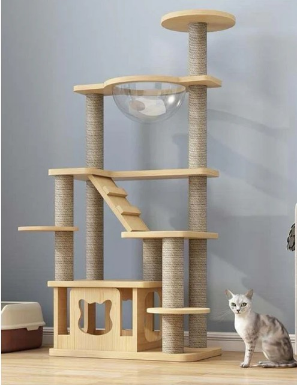

Gimnasio Premium
Precio: $210.000
Descripción:
El Gimnasio Premium es una torre de gran altura con múltiples niveles, hamacas, miradores y juguetes colgantes. Es perfecto para gatos activos que disfrutan saltar, trepar y descansar desde lo alto, brindando diversión y ejercicio diario.
Características principales
- Torre alta con múltiples niveles y plataformas.
- Hamacas y miradores para descansar y observar.
- Juguetes colgantes para estimular el juego.
- Materiales premium y estructura robusta.
- Fácil de montar y limpiar.
Beneficios
- Estimula el ejercicio y el juego en gatos de todas las edades.
- Ideal para varios gatos o gatos muy activos.
- Proporciona un espacio propio y divertido para tu mascota.
Dimensiones aproximadas
- Alto: 160 cm
- Ancho: 80 cm
- Profundidad: 60 cm
Recomendado para:
- Gatos medianos y grandes
- Hogares con varios gatos
Preguntas frecuentes
- ¿Es estable? Sí, su base ancha y materiales robustos garantizan estabilidad.
- ¿Incluye todos los accesorios? Sí, viene completo con hamacas y juguetes colgantes.